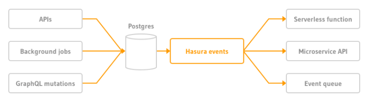

GraphQL vs REST & Introduction to Hasura

REST has been a popular architectural style for designing APIs (Application Programming Interfaces) but in recent years, GraphQL’s popularity is threatening REST’s reign. The argument over GraphQL vs REST is raging, and most businesses are torn between the two when it comes to creating or utilizing APIs. While REST is widely accepted as the industry standard for designing APIs, GraphQL has been hailed as a new technology capable of overcoming flaws in REST. REST and GraphQL are two methods of data retrieval. One is a more traditional method, while the other one just came out in 2015 but has really taken off with developers.
A brief about REST
The REST (short for representational state transfer) design paradigm centers on a uniform and predefined set of stateless operations that enable users to access and manipulate web data. APIs that conform to REST design principles are usually called RESTful APIs. In REST architecture, APIs expose their functionality as resources, which are any type of service, data, or object that a client can access. Every resource comes with its own unique URI (Uniform Resource Identifier) that a client can access by sending a request to the server.

So, whenever a client calls a RESTful API, the server will respond with a representation of the state of the queried resource. Many common REST implementations utilize the standard HTTP methods (GET, POST, PUT, DELETE, and PATCH) to call a server.
Into GraphQL
GraphQL is a query language for APIs that enables the client to make HTTP requests and get responses, declarative data fetching in order to give the client the power to specify exactly the data that is needed from the API. It makes easier to evolve APIs over time.

In GraphQL, a set of information is seen in the context of a graph, just as the name suggests. Nodes, which are defined using the GraphQL schema system, represent objects. And edges represent the connection between nodes in the graph. This enables clear relationships between queries and increases the connectivity between objects. GraphQL allows users to request data from several resources using a single request. Rather than making multiple requests to fetch data, you can use it to make ad-hoc queries to a single endpoint and access all the required data.
.png)
Furthermore, GraphQL provides the client with the luxury to specify the exact type of data to be received from the server. Nothing more, nothing less. This predictable data structure makes it highly readable and efficient.
Where REST takes Over GraphQL
Where REST APIs Beat Out GraphQL REST has become the industry standard for companies deploying APIs. REST endpoints are mature and have been around for a while. Even “late-to-scene” OEMs have REST endpoints now, and if you have done any type of automation, you’re going to be familiar with REST. Similarly, API analytics are easier to obtain for REST, due to the limited amount of tooling for GraphQL. There is a promise of more insights in the near future, once tools that support GraphQL are made more widely available.
Where GraphQL takes over REST
Where GraphQL Has the Upper Hand Over REST APIs When using a REST API to fetch information, you’ll always get back a complete dataset. For example, if you wanted to request information from two objects, you’d need to perform two REST API requests. The advantage of REST APIs is its simplicity—you have one endpoint that does one task, so it’s easy to understand and manipulate. In other words, if you have X endpoint, it provides X data. Conversely, if you wanted to gather some information from a specific endpoint, you couldn’t limit the fields that the REST API returns; you’ll always get a complete data set. This phenomenon is referred to as over fetching. GraphQL uses its query language to tailor the request to exactly what you need, from multiple objects down to specific fields within each entity. GraphQL would take X endpoint, and it can do a lot with that information, but you have to tell it what you want first. In essence, GraphQL is extremely powerful, once you know how to use it. Because you are only fetching the data that you require, you limit the amount of processing required.
What is Hasura ?
According to the official documentation, Hasura is the instant realtime GraphQL APIs engine. It makes your data instantly accessible over a real-time GraphQL API, so you can build and ship modern apps and APIs much faster. Hasura connects to your databases, REST servers, GraphQL servers, and third-party APIs to provide a unified, instant realtime GraphQL API across all your data sources. Postgres database tables are reflected directly in the structure and relationships of the GraphQL queries and mutations without writing any code.
Why Hasura ?
- Realtime with subscriptions & live-queries.
The GraphQL specification allows for something called subscriptions that are like GraphQL queries but instead of returning data in one read, you get data pushed from the server. This is useful for your app to subscribe to "events" or "live results" from the backend, while allowing you to control the "shape" of the event from your app. GraphQL subscriptions are a critical component of adding realtime or reactive features to your apps easily. GraphQL clients and servers that support subscriptions allow you to build great experiences without having to deal with websocket code!
- Dynamic access control that integrates with your auth.
Hasura supports role-based authorization where access control is done by creating rules for each role, table and operation (insert, update, etc.). These access control rules use dynamic session variables that are passed to the GraphQL engine from your authentication service with every request. Role information is inferred from the X-Hasura-Role and X-Hasura-Allowed-Roles session variables. Other session variables can be passed by your auth service as per your requirements.
- Restrict access in production to only pre-approved queries.
The Allow-list is a list of safe operations (GraphQL queries, mutations or subscriptions) that is stored by the GraphQL engine in its metadata. When enabled, it can be used to restrict the GraphQL engine so that it executes only those operations that are present in the list.
- Write business logic backed by REST APIs.
Actions are a way to extend Hasura’s schema with custom business logic using custom queries and mutations. Actions can be added to Hasura to handle various use cases such as data validation, data enrichment from external sources and any other complex business logic.
- Merge Remote GraphQL schemas.
Hasura has the ability to merge remote GraphQL schemas and provide a unified GraphQL API. Think of it like automated schema stitching. All you need to do is build your own GraphQL service and then provide the HTTP endpoint to Hasura. Your GraphQL service can be written in any language or framework.
- Trigger webhooks on database events.
Hasura can be used to create event triggers on tables in the Postgres database. Event triggers reliably capture events on specified tables and invoke webhooks to carry out any custom logic.
Events can be of the following types:
- INSERT: When a row is inserted into a table
- UPDATE: When a row is updated in a table
- DELETE: When a row is deleted from a table
- MANUAL: Using the console or API, an event can be triggered manually on a row
- Adding multiple Postgres databases to Hasura.
Hasura 2.0 release is support for multiple Postgres database types. In just a few clicks you can add an an extra database, existing or new, track the tables, enable relations, and unlock the power of GraphQL.
- Admin UI & Rails inspired schema migrations.
As you use the UI to build and manipulate your GraphQL and database schema, Hasura automatically spits out migrations files that you can put in version control.